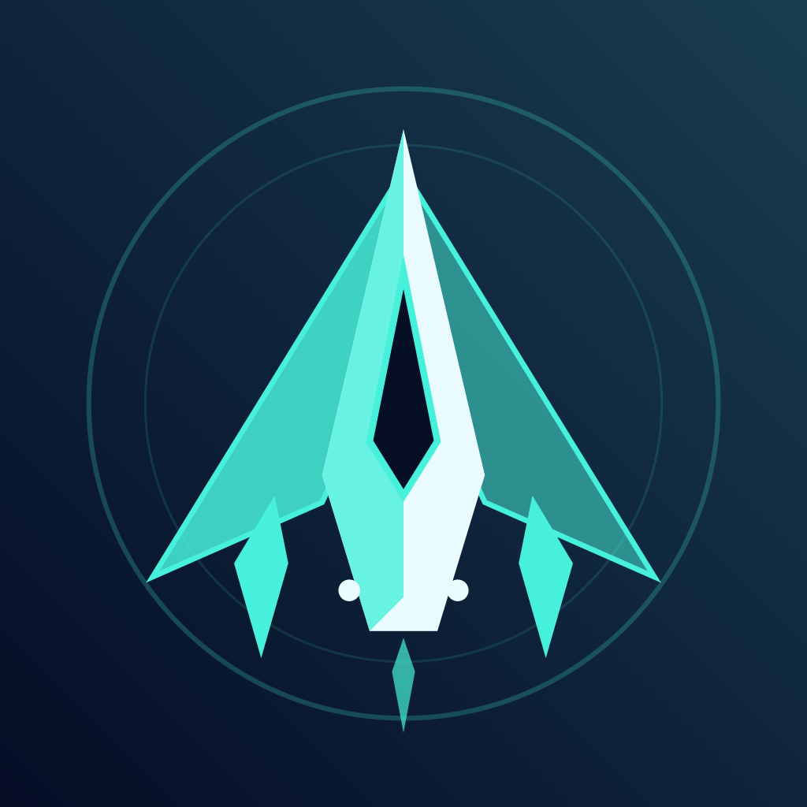
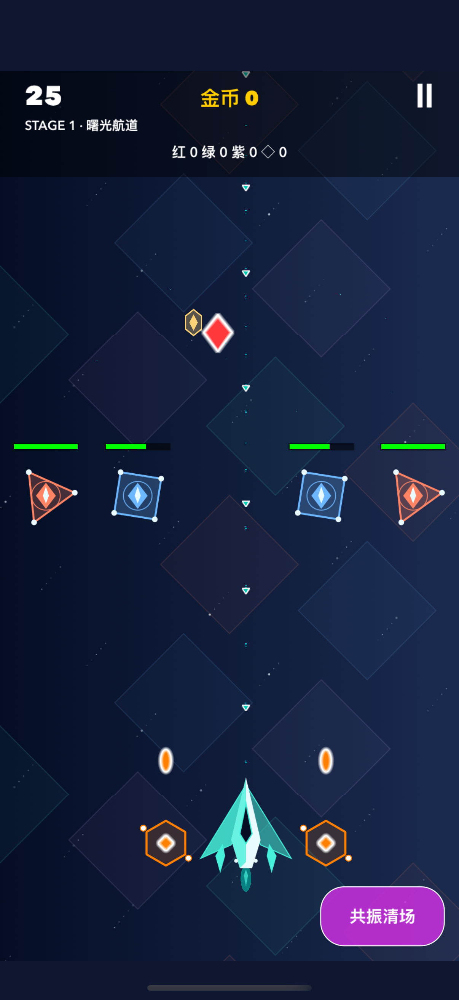
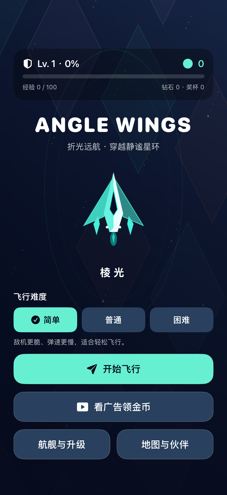

Drag to join the action
Your craft fires automatically, leaving you to focus on movement and dodging. Time your skill to make room for the next stretch of the journey.
Independently made · iPhone & iPad

ANGLEWINGSA journey through light
Pilot a prism-powered craft through the star ring. Dodge, fire, and find your own way forward.
Drag to steer, fire automatically, and choose when to use your skill. Equip companion drones and take on three bosses. Core gameplay works offline, requires no account, and saves progress on your device.

Set your own pace
Choose Easy, Normal, or Hard before each flight. Every run starts at stage 1 while your coins, unlocked craft, and upgrades stay with you.

Your craft fires automatically, leaving you to focus on movement and dodging. Time your skill to make room for the next stretch of the journey.
Prism, Flare, Tide, and Umbra have distinct looks and skills. Equip each companion slot independently and combine firepower with support effects.
Travel through Dawn and the Star Ring. Face bombs, splitting enemies, spread shots, and beams. Collect loot, upgrade your weapons, and challenge your personal best.
Progress is stored locally on your device. See our privacy policy for advertising and third-party data practices.
Developer & support
For game support, feedback, or privacy questions, get in touch by email.